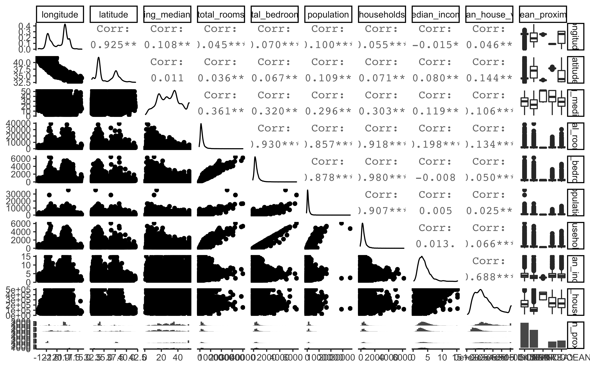

Chapter 2 Data understanding
In Data Understanding, you will learn how to:
- Import data
- Get an overview about the data structure
- Split data into training and test set using stratified sampling
- Discover and visualize the data to gain insights
2.1 Imort Data
First of all, let’s import the data:
LINK <- "https://raw.githubusercontent.com/kirenz/datasets/master/housing.csv"
housing_df <- read_csv(LINK)2.2 Data overview
Next, we take a look at the data structure:
California census top 4 rows of the DataFrame:
head(housing_df, 4)## # A tibble: 4 x 10
## longitude latitude housing_median_… total_rooms total_bedrooms population
## <dbl> <dbl> <dbl> <dbl> <dbl> <dbl>
## 1 -122. 37.9 41 880 129 322
## 2 -122. 37.9 21 7099 1106 2401
## 3 -122. 37.8 52 1467 190 496
## 4 -122. 37.8 52 1274 235 558
## # … with 4 more variables: households <dbl>, median_income <dbl>,
## # median_house_value <dbl>, ocean_proximity <chr>Data info:
glimpse(housing_df)## Rows: 20,640
## Columns: 10
## $ longitude <dbl> -122.23, -122.22, -122.24, -122.25, -122.25, -122.…
## $ latitude <dbl> 37.88, 37.86, 37.85, 37.85, 37.85, 37.85, 37.84, 3…
## $ housing_median_age <dbl> 41, 21, 52, 52, 52, 52, 52, 52, 42, 52, 52, 52, 52…
## $ total_rooms <dbl> 880, 7099, 1467, 1274, 1627, 919, 2535, 3104, 2555…
## $ total_bedrooms <dbl> 129, 1106, 190, 235, 280, 213, 489, 687, 665, 707,…
## $ population <dbl> 322, 2401, 496, 558, 565, 413, 1094, 1157, 1206, 1…
## $ households <dbl> 126, 1138, 177, 219, 259, 193, 514, 647, 595, 714,…
## $ median_income <dbl> 8.3252, 8.3014, 7.2574, 5.6431, 3.8462, 4.0368, 3.…
## $ median_house_value <dbl> 452600, 358500, 352100, 341300, 342200, 269700, 29…
## $ ocean_proximity <chr> "NEAR BAY", "NEAR BAY", "NEAR BAY", "NEAR BAY", "N…Data summary of numerical and categorical attributes using a function from the package skimr:
skim(housing_df)| Name | housing_df |
| Number of rows | 20640 |
| Number of columns | 10 |
| _______________________ | |
| Column type frequency: | |
| character | 1 |
| numeric | 9 |
| ________________________ | |
| Group variables | None |
Variable type: character
| skim_variable | n_missing | complete_rate | min | max | empty | n_unique | whitespace |
|---|---|---|---|---|---|---|---|
| ocean_proximity | 0 | 1 | 6 | 10 | 0 | 5 | 0 |
Variable type: numeric
| skim_variable | n_missing | complete_rate | mean | sd | p0 | p25 | p50 | p75 | p100 | hist |
|---|---|---|---|---|---|---|---|---|---|---|
| longitude | 0 | 1.00 | -119.57 | 2.00 | -124.35 | -121.80 | -118.49 | -118.01 | -114.31 | ▂▆▃▇▁ |
| latitude | 0 | 1.00 | 35.63 | 2.14 | 32.54 | 33.93 | 34.26 | 37.71 | 41.95 | ▇▁▅▂▁ |
| housing_median_age | 0 | 1.00 | 28.64 | 12.59 | 1.00 | 18.00 | 29.00 | 37.00 | 52.00 | ▃▇▇▇▅ |
| total_rooms | 0 | 1.00 | 2635.76 | 2181.62 | 2.00 | 1447.75 | 2127.00 | 3148.00 | 39320.00 | ▇▁▁▁▁ |
| total_bedrooms | 207 | 0.99 | 537.87 | 421.39 | 1.00 | 296.00 | 435.00 | 647.00 | 6445.00 | ▇▁▁▁▁ |
| population | 0 | 1.00 | 1425.48 | 1132.46 | 3.00 | 787.00 | 1166.00 | 1725.00 | 35682.00 | ▇▁▁▁▁ |
| households | 0 | 1.00 | 499.54 | 382.33 | 1.00 | 280.00 | 409.00 | 605.00 | 6082.00 | ▇▁▁▁▁ |
| median_income | 0 | 1.00 | 3.87 | 1.90 | 0.50 | 2.56 | 3.53 | 4.74 | 15.00 | ▇▇▁▁▁ |
| median_house_value | 0 | 1.00 | 206855.82 | 115395.62 | 14999.00 | 119600.00 | 179700.00 | 264725.00 | 500001.00 | ▅▇▅▂▂ |
Count levels of our categorical variable:
housing_df %>%
count(ocean_proximity,
sort = TRUE)## # A tibble: 5 x 2
## ocean_proximity n
## <chr> <int>
## 1 <1H OCEAN 9136
## 2 INLAND 6551
## 3 NEAR OCEAN 2658
## 4 NEAR BAY 2290
## 5 ISLAND 5The function ggscatmat from the package GGally creates a matrix with scatterplots, densities and correlations for numeric columns. In our code, we enter the dataset housing_df, choose columns 6 to 9, a color column for our categorical variable ocean_proximity, and an alpha level of 0.8 (for transparency).
ggscatmat(housing_df, columns = 6:9, color="ocean_proximity", alpha=0.8)
To obtain an overview of even more visualizations, we can use the function ggpairs:
ggpairs(housing_df)
2.3 Data splitting
Let’s assume we would know that the median income is a very important attribute to predict median housing prices. Therefore, we would want to create a training and test set using stratified sampling.
A stratum (plural strata) refers to a subset (part) of the population (entire collection of items under consideration) which is being sampled. Take a look at 2.1
housing_df %>%
ggplot(aes(median_income)) +
geom_histogram(bins = 30)
Figure 2.1: Histogram of Median Income
We want to ensure that the test set is representative of the various categories of incomes in the whole dataset. In other words, we would like to have instances for each stratum, or else the estimate of a stratum’s importance may be biased. This means that you should not have too many strata, and each stratum should be large enough. We use 5 strata in our example.
set.seed(42)
new_split <- initial_split(housing_df,
prop = 3/4,
strata = median_income,
breaks = 5)
new_train <- training(new_split)
new_test <- testing(new_split)2.4 Data exploration
A Geographical scatterplot of the data:
housing_df %>%
ggplot(aes(x = longitude, y = latitude)) +
geom_point(color = "cornflowerblue")
Figure 2.2: Scatterplot of longitude and latitude
A better visualization that highlights high-density areas:
housing_df %>%
ggplot(aes(x = longitude, y = latitude)) +
geom_point(color = "cornflowerblue", alpha = 0.1) 
Figure 2.3: Scatterplot of longitude and latitude that highlights high-density areas
California housing prices:
- red is expensive,
- purple is cheap and
- larger circles indicate areas with a larger population.
housing_df %>%
ggplot(aes(x = longitude, y = latitude)) +
geom_point(aes(size = population, color = median_house_value),
alpha = 0.4) +
scale_colour_gradientn(colours=rev(rainbow(4)))
Figure 2.4: California housing_df prices
library(ggmap)
qmplot(x = longitude,
y = latitude,
data = housing_df,
geom = "point",
color = median_house_value,
size = population,
alpha = 0.4) +
scale_colour_gradientn(colours=rev(rainbow(4)))